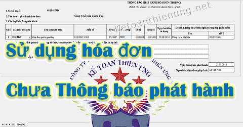

Sử dụng hóa đơn chưa thông báo phát hành có bị phạt? Cách xử lý hóa đơn chưa thông báo phát hành đã sử dụng? Hóa đơn đầu vào chưa thông báo phát hành có được đưa vào chi phí hợp lý khi tính thuế TNDN? Kế toán Diệu Tâm xin giải đáp các vướng mắc đó của các bạn.
I. QUY ĐỊNH ĐỐI VỚI BÊN BÁN:
Theo Khoản 3 Điều 1 Thông tư 37/2017/TT-BTC (sửa đổi bổ sung khoản 4 Điều 9 Thông tư số 39/2014/TT-BTC) cụ thể như sau:
‘’1. Tổ chức kinh doanh trước khi sử dụng hóa đơn cho việc bán hàng hóa, dịch vụ, trừ hóa đơn được mua, cấp tại cơ quan thuế, phải lập và gửi Thông báo phát hành hóa đơn (mẫu số 3.5 Phụ lục 3 ban hành kèm theo Thông tư 39), hóa đơn mẫu cho cơ quan thuế quản lý trực tiếp.’’
“4. Thông báo phát hành hóa đơn và hóa đơn mẫu phải được gửi đến cơ quan thuế quản lý trực tiếp chậm nhất hai (02) ngày trước khi tổ chức kinh doanh bắt đầu sử dụng hóa đơn.
Thông báo phát hành hóa đơn gồm cả hóa đơn mẫu phải được niêm yết rõ ràng ngay tại các cơ sở sử dụng hóa đơn để bán hàng hóa, dịch vụ trong suốt thời gian sử dụng hóa đơn.
Ví dụ 1: DN bạn muốn sử dụng hóa đơn ngày 23/12/2018 -> Thì các bạn phải làm Thông báo phát hành hóa đơn nộp cho Cơ quan thuế chậm nhất là ngày 21/12/2018 và trên Thông báo phát hành hóa đơn ghi vào cột "Ngày bắt đầu sử dụng" là: 23/12/2018.
Ví dụ 2: DN bạn nộp Thông báo phát hành hóa đơn ngày 14/12/2018 -> Thì cột "Ngày bắt đầu sử dụng" các bạn có thể ghi: 16/12/2018 (hoặc ghi sau ngày 16/12/2018)
-> Cơ quan quản lý thuế có trách nhiệm hướng dẫn tổ chức kinh doanh thanh lý hợp đồng in khi đã lập tờ Thông báo phát hành hóa đơn đối với hợp đồng đặt in hóa đơn không quy định thời hạn thanh lý hợp đồng (đối với hóa đơn đặt in) và không bị xử phạt.
Trường hợp tổ chức kinh doanh khi gửi thông báo phát hành từ lần thứ 2 trở đi, nếu không có sự thay đổi về nội dung và hình thức hóa đơn phát hành thì không cần phải gửi kèm hóa đơn mẫu.
Trường hợp tổ chức có các đơn vị trực thuộc, chi nhánh có sử dụng chung mẫu hóa đơn của tổ chức nhưng khai thuế GTGT riêng thì từng đơn vị trực thuộc, chi nhánh phải gửi Thông báo phát hành cho cơ quan thuế quản lý trực tiếp.
Trường hợp tổ chức có các đơn vị trực thuộc, chi nhánh có sử dụng chung mẫu hóa đơn của tổ chức nhưng tổ chức thực hiện khai thuế GTGT cho đơn vị trực thuộc, chi nhánh thì đơn vị trực thuộc, chi nhánh không phải Thông báo phát hành hóa đơn.
- Tổng cục Thuế có trách nhiệm căn cứ nội dung phát hành hóa đơn của tổ chức để xây dựng hệ thống dữ liệu thông tin về hóa đơn trên trang thông tin điện tử của Tổng cục Thuế để tổ chức, cá nhân tra cứu được nội dung cần thiết về hóa đơn đã thông báo phát hành của tổ chức.
- Trường hợp khi nhận được Thông báo phát hành do tổ chức gửi đến, cơ quan Thuế phát hiện thông báo phát hành không đảm bảo đủ nội dung theo đúng quy định thì trong thời hạn hai (02) ngày làm việc kể từ ngày nhận được Thông báo, cơ quan thuế phải có văn bản thông báo cho tổ chức biết. Tổ chức có trách nhiệm điều chỉnh để thông báo phát hành mới.”
KẾT LUẬN
- Trước khi sử dụng hóa đơn GTGT -> DN phải làm thông báo phát hành hóa đơn + hóa đơn mẫu nộp cho cơ quan thuế.
- Thời hạn chậm nhất 2 ngày trước khi sử dụng hóa đơn
Xem thêm: Thủ tục thông báo phát hành hóa đơn
----------------------------------------------------------------------------------------------------
Mức phạt sử dụng hóa đơn chưa thông báo phát hành:
Theo Khoản 2 Điều 1 Thông tư 176/2016/TT-BTC
“Phạt tiền từ 500.000 đồng đến 1.500.000 đồng đối với một trong các hành vi:
b) Sử dụng hóa đơn đã được thông báo phát hành với cơ quan thuế nhưng chưa đến thời hạn sử dụng (05 ngày kể từ ngày gửi thông báo phát hành).”
Ví dụ 3: DN bạn nộp Thông báo phát hành hóa đơn ngày 14/12/2018 -> Cột "Ngày bắt đầu sử dụng" các bạn ghi: 16/12/2018 -> Tức là ngày 16 trở đi các bạn mới được sử dụng.
-> Nhưng các bạn lại xuất hóa đơn ngày 15/12/2018 (thì sẽ bị phạt như trên)
2. Nếu chưa Thông phát hành mà đã sử dụng hóa đơn:
Theo khoản 2 điều 10 Thông tư 10/2014/TT-BTC
2. Đối với hành vi không lập Thông báo phát hành hóa đơn trước khi hóa đơn được đưa vào sử dụng:
“a) Trường hợp tổ chức, cá nhân chứng minh đã gửi thông báo phát hành hóa đơn cho cơ quan thuế trước khi hóa đơn được đưa vào sử dụng nhưng cơ quan thuế không nhận được do thất lạc thì tổ chức, cá nhân không bị xử phạt.
b) Phạt tiền 6.000.000 đồng đối với hành vi không lập Thông báo phát hành hóa đơn trước khi hóa đơn được đưa vào sử dụng nếu các hóa đơn này gắn với nghiệp vụ kinh tế phát sinh đã được kê khai, nộp thuế theo quy định.
c) Phạt tiền từ 6.000.000 đồng đến 18.000.000 đồng đối với hành vi không lập Thông báo phát hành hóa đơn trước khi hóa đơn được đưa vào sử dụng nếu các hóa đơn này gắn với nghiệp vụ kinh tế phát sinh nhưng chưa đến kỳ khai thuế. Người bán phải cam kết kê khai, nộp thuế đối với các hóa đơn đã lập trong trường hợp này.
Trường hợp người bán có hành vi vi phạm quy định tại điểm a, điểm b và điểm c Khoản này và đã chấp hành Quyết định xử phạt, người mua hàng được sử dụng hóa đơn để kê khai, khấu trừ, tính vào chi phí theo quy định.
d) Trường hợp tổ chức, cá nhân không lập Thông báo phát hành hóa đơn trước khi hóa đơn được đưa vào sử dụng nếu các hóa đơn này không gắn với nghiệp vụ kinh tế phát sinh hoặc không được kê khai, nộp thuế thì xử phạt theo hướng dẫn tại Khoản 5 Điều 11 Thông tư này, cụ thể như sau:
+ 5. Phạt tiền từ 20.000.000 đồng đến 50.000.000 đồng đối với hành vi sử dụng hóa đơn bất hợp pháp”
3. Cách xử lý hóa đơn chưa thông báo phát hành đã sử dụng:
- Doanh nghiệp vi phạm quy định trên -> Vẫn phải thực hiện thủ tục phát hành hóa đơn theo quy định.
4. Cần nhớ: Sau khoảng từ 2 - 5 ngày kể từ khi nộp thông báo phát hành hóa đơn -> Các bạn cần kiểm tra xem hóa đơn đó đã được sử dụng chưa nhé.
- Cách sử dụng các bạn bấm vào đường link: "Cách kiểm tra hóa đơn có hợp lệ không" bên dưới nhé.
- Nếu thấy kết quả chưa có thông tin gì thì các bạn phải liên hệ với Chi cục thuế để kiểm tra lại nhé.
------------------------------------------------------------------------------
II. Quy định đối với BÊN MUA:
Theo Công văn 5791/TCT-CS ngày 14/12/2016 của Tổng cục thuế:
Tại khoản 1 Điều 12 Thông tư số 166/2013/TT-BTC ngày 15/11/2013 của Bộ Tài chính hướng dẫn xử phạt vi phạm hành chính về thuế:
“1. Các trường hợp khai sai dẫn đến thiếu số tiền thuế phải nộp hoặc tăng số tiền thuế được hoàn, bao gồm:
…
d) Sử dụng hóa đơn, chứng từ bất hợp pháp để hạch toán giá trị hàng hóa, dịch vụ mua vào làm giảm số tiền thuế phải nộp hoặc làm tăng số tiền thuế được hoàn, số tiền thuế được miễn, giảm, nhưng khi cơ quan thuế kiểm tra phát hiện, người mua có hồ sơ, tài liệu, chứng từ, hóa đơn chứng minh được lỗi vi phạm hóa đơn bất hợp pháp thuộc về bên bán hàng và người mua đã hạch toán kế toán đầy đủ theo quy định.”
Căn cứ quy định trên, đề nghị Cục Thuế tỉnh Bạc Liêu xem xét, trường hợp Công ty TNHH MTV CBTHS XNK Thiên Phú sử dụng hóa đơn chưa thông báo phát hành của Công ty TNHH MTV Hoàng Phương, nhưng Công ty TNHH MTV CBTHS XNK Thiên Phú có hồ sơ, tài liệu, chứng từ, hóa đơn chứng minh được lỗi vi phạm hóa đơn bất hợp pháp thuộc về Công ty TNHH MTV Hoàng Phương và Công ty TNHH MTV CBTHS XNK Thiên Phú đã hạch toán kế toán đầy đủ theo quy định thì Công ty TNHH MTV CBTHS XNK Thiên Phú bị xử phạt theo quy định tại khoản 1 Điều 12 Thông tư số 166/2013/TT-BTC nêu trên.”
=> Mức xử phạt đối với các hành vi vi phạm quy định tại Khoản 1 Điều 12 Thông tư số 166/2013/TT-BTC là 20% tính trên số tiền thuế khai thiếu hoặc số tiền thuế được hoàn, số thuế được miễn, giảm cao hơn so với mức quy định của pháp luật về thuế.
Nếu không chứng minh được là giao dịch thật thì đó là tội sử dụng hóa đơn bất hợp pháp: Ngoài việc bị loại ra khỏi chi phí, còn bị phạt từ 20 - 50tr (sử dụng hóa đơn bất hợp pháp)
--------------------------------------------------------------------
Theo khoản 2 điều 10 Thông tư 10/2014/TT-BTC:
- Trường hợp người bán không lập Thông báo phát hành hóa đơn trước khi sử dụng hóa đơn, nếu các hóa đơn này gắn với nghiệp vụ kinh tế phát sinh và đã chấp hành Quyết định xử phạt, người mua hàng được sử dụng hóa đơn để kê khai, khấu trừ, tính vào chi phí theo quy định.
Chú ý: Là phải có đầy đủ hồ sơ, hợp đồng, hóa đơn, chứng từ thanh toán, phiếu xuất kho, nhập kho, biên bản bàn giao hàng hóa ...để chứng minh là lỗi của bên bán nhé.
------------------------------------------------------------------------
Bài học rút ra: Khi nhận hóa đơn đầu vào thì các bạn nên kiểm tra xem hóa đơn đó đã được thông báo phát hành hay chưa, có đúng là của công ty đó không. Chi tiết cách kiểm tra các bạn xem tại đây nhé:
-> Nếu kết quả không có thông tin của hóa đơn và Doanh nghiệp thì các bạn liên hệ lại với bên bán xem người họ đã thông báo phát hành chưa nhé.
Kế toán Diệu Tâm xin chúc các bạn thành công!
----------------------------------------------
----------------------------------------------
